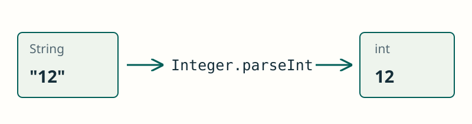

Cadenes de text i conversions
JAVA / FONAMENTS
Treballar amb text
Una cadena és immutable: una transformació produïx un text nou.
Una cadena guarda text, encara que eixe text continga xifres. Abans de calcular, decidix si necessites tractar-lo com a text o com a nombre.
Per a conservar una transformació, guarda el resultat. Concatena amb + i compara el contingut amb equals.
String texto = "hola";
texto = texto.toUpperCase();
System.out.println(texto); // HOLA
JAVA / FONAMENTS
Concatenar
Si un operand és text, + unix el text.
Quan un operand és String, + concatena. Els parèntesis permeten calcular primer una suma i unir després el resultat al text.
Veure l’explicació
"12" és text; es concatena amb 3 i s’obté "123".
System.out.println("12" + 3);JAVA / FONAMENTS
Comparar el contingut
equals compara el text de dos cadenes.
equals comprova el contingut i distingix majúscules i minúscules. == comprova si les referències apunten al mateix objecte.
Veure l’explicació
Les dos cadenes contenen exactament Alex. equals distingix majúscules i minúscules.
String nombre = "Alex";
System.out.println(nombre.equals("Alex"));JAVA / FONAMENTS
Convertir abans de calcular
parseInt convertix un text amb format enter en un int.
La conversió produïx un int que es pot utilitzar en càlculs. La variable de text original continua contenint una cadena.
Veure l’explicació
Ara numero és un int; + realitza una suma numèrica.
int numero = Integer.parseInt("12");
System.out.println(numero + 3);JAVA / FONAMENTS
Detectar un format incorrecte
El text ha de tindre el format del nombre que volem obtindre.
parseInt exigix un text amb format enter i un valor dins del rang d’int. Un format incorrecte provoca NumberFormatException.
Veure l’explicació
3.5 no és un text amb format enter. Double.parseDouble("3.5") permet obtindre el decimal.
int numero = Integer.parseInt("3.5");PROVA I OBSERVA
Text o nombre?
Compara concatenar amb sumar després de convertir. parseInt necessita un enter entre −2147483648 i 2147483647, sense espais.
Observa que la mateixa dada pot produir resultats diferents: concatenar conserva el text; convertir permet fer una suma numèrica.
Simulació didàctica de les operacions mostrades; no executa codi Java.